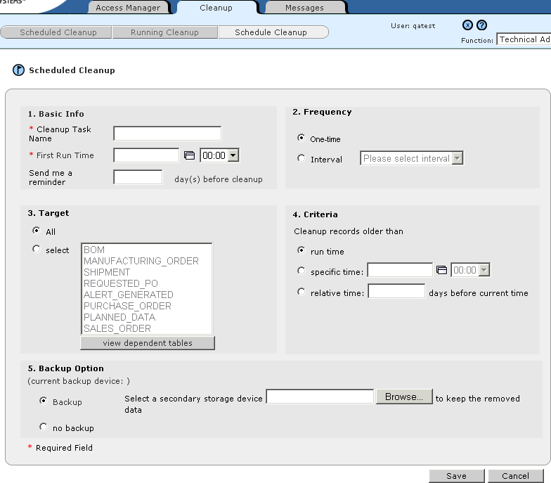

Scheduling Cleanups
You can set up and schedule periodic data cleanup activities.
Only users with the Technical Admin function can schedule cleanups.
To schedule a
cleanup
1 In the Function drop-down list, select Technical Admin.
2 Click the Cleanup tab, then click Schedule Cleanup. The Schedule Cleanup page
appears.

3 Enter the cleanup configuration details.
|
Section Name
|
Description
|
|
Basic Info
|
· * Cleanup Task Name - Enter a unique and descriptive name for the cleanup task.
· * First Run Time - Enter a date (or click  to select a date) and select a time for the first run of the cleanup.
· Send me a reminder - Optionally enter a number of days prior to the scheduled cleanup to be sent a reminder.
|
|
Frequency
|
How often the cleanup will be run. Select either One Time or Interval. If Interval, select daily, weekly, monthly, quarterly, or yearly.
|
|
Target
|
The type of data to be deleted. Select either All or select. If select, select one or more data types from the list (hold down the Ctrl key while clicking to select more than one).
|
|
Criteria
|
Defines the age of records (of the type defined in the Target section) to be deleted:
· run time - Every record older than the time of the cleanup.
· specific time - Every record older than the entered date (or click to select a date) and selected time.
· relative time - Every record older that the entered number of days prior to the time of the cleanup.
|
|
Backup Options
|
Defines whether the deleted data will be backed up.
· Backup - Click Browse to select a drive and folder to store the backup files. The backup will overwrite the contents of any existing file of the same name.
· no backup - The date is deleted and cannot be retrieved.
|
* indicates a required field.
4 Click Save.
5 In the confirmation dialog box, click OK.